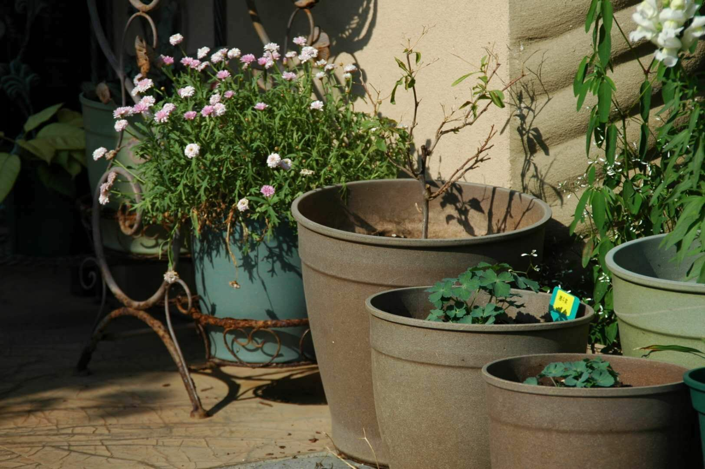

ZhuHai GreenTech
×
Home
About Vipot
Production Process
Ecological Benefits
Products
Packaging & Delivery
Gallery
Contact Us
Menu
Production Process
Ground gain husk into powder
Mix grain husk powder with the binder
Use moulds and a hot press machine to form the pot structure
Punch holes and trim frayed rims
Our pots are formed via heat press.
Circle Of Life
Depending on the application, Vipot’s designed usage life can vary from 3 months up to 5 years. After the pot has served its usage life, it can simply be treated as compost and given back to the earth. This circle of life can be repeated over a countless number of generations.
Décor Nova series after several years of use

Degrading
The germination rate of Vipot compost and blank compost were found to be very similar. Additionally, compost residue from Vipot does not have any negative impact on plant growth and no ecotoxic effect was found.
Pots degrading after their usage life